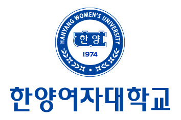
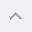
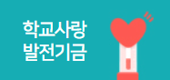

대학소개
학교법인 한양학원
대학비전
건학정신
대학사명선언문
설립자 메시지
이사장 말씀
대학상징
대학발전사
총장실
총장인사말
약력 및 경력
역대총장
열린총장실
대학기관
대학규정
규정집
규정제/개정안내
윤리헌장
캠퍼스안내
찾아오시는 길
캠퍼스맵
VR캠퍼스맵
셔틀버스시간표
전화번호안내
시설대관안내
발전기금
기금안내
온라인안내
대학 홍보영상
VISON 2030+
교육 목표/교육 목적
비전과 미래
VISON 2030+
핵심가치 및 핵심역량
중점전략 및 핵심과제
혁신지원사업 방향
특성화 방향
입학안내
학과안내
학과소개
학사학위전공심화과정
융복합 마이크로 전공
고숙련일학습병행
대학생활
학사일정
학사안내
학적변동
조기취업
출석인정제
시험유급학사경고
교원자격취득(교직)
연계편입협약대학
등록금 납부 및 환불 관련 FAQ
장학제도
장학제도안내
장학금신청안내
사회봉사
사회봉사과목소개
해외봉사
유학생튜터제도
동행프로그램
국제교류
해외자매대학
해외대학 학점인정
해외 어학연수
해외 현장실습
비교과프로그램
진로취업지원센터
학생이력관리시스템
대학생활상담센터
학생활동
총학생회
동아리
총동문회
장애학생 지원
증명서발급
강의실안내(캠퍼스맵)
시설안내
도서관
미술관
보건실
학생휴게실
식당
기타시설안내
주차장
열린광장
공지사항
공통,일반
교무, 학사
장학, 학자금
입찰공고
행정공지
청탁금지법
개인정보제공내역
대학소식
정보공개
정보공개제도안내
정보공개청구
업무추진비 사용내역
비공개대상정보
교직원마당
주요위원회
대학평의원회 회의록
등록금심의위원회 회의록
이사회 회의록
서식자료실
행원게시판
게시판운영규정
자유게시판
재택수업 자유게시판
온라인문의
재택수업 sw 문의
온라인 공청회
코로나19 대응 게시판
대학 대처방안
감염병 예방 수칙
정보서비스
하이유포털
수강신청
e-class System
학생이력관리시스템
e-포트폴리오 시스템
현장실습지원시스템
증명서발급센터
그룹웨어(전자결제)
재정지원사업포털
교수학습지원센터
사설망 접근 방침
VPN사용안내(교직원)
VPN사용안내(외부인)
서버접근안내
교내 Wi-Fi 접속 방법
원격지원
개인정보처리방침
개인정보처리방침
영상청보처리기기 운영관리 방침
정보보안지침
MS오피스 365 안내
VR 캠퍼스 맵
바로가기_학과
학과 바로가기
니트패션디자인학과
문예창작과
보건행정과
비서인재과
빅데이터과
사회복지과
산업디자인과
서비스경영학과
섬유패션디자인과
세라믹다지인과
세무회계과
소프트웨어융합과
스마트IT과
스포츠건강관리과
시각미디어디자인과
식품영양과
실무영어과
실무일본어과
실무중국어과
실용음악과
실용음악과
영상콘텐츠과
외식산업과
유아교육과
인테리어디자인과
치위생과
패션디자인과
항공과
행정실무과
호텔관광과
AI융합과
융복합 마이크로 전공
고숙련일학습병행
바로가기_기관
기관 바로가기
교무처
교수학습개발센터
교육과정혁신센터
교육환경개선센터
국제협력실
기획조정처
니트연구소
대학생활상담센터
도서관
일학습병행훈련센터
만리포 청소년수련회
미술관
사무처
사회봉사단
산학디자인센터
산학협력단
산학협력처
서울직업교육거점센터
세라믹연구소
소셜혁신연구소
외국어교육센터
입학홍보실
정보통신원
진로취업지원센터
총동창회
총학생회
평생교육원
학생복지처
한국어교육센터
행원보건센터
혁신지원사업단
휘트니스센터
AI융합혁신센터
HYWU미디어센터
LINC+

대학정보공시
예결산공고
자체평가 보고서
그룹웨어, 교직원웹메일
입찰공고
청탁금지법
개인정보처리방침
개인정보목적외이용, 제공
한국연구자정보(KRI)